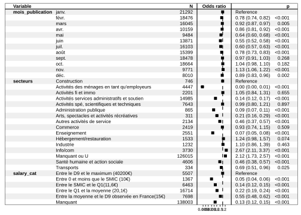
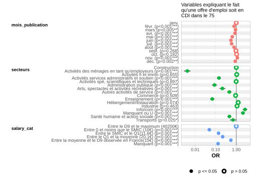

Section14 Modèles de régression : application sur les offres de Pôle emploi 2020
On cherche maintenant à expliquer un phénomène ou une variable par rapport à d’autres. On va ici s’intéresser au fait qu’une offre de Pôle emploi corresponde à un CDI ou non.
On va repartir de la base OffresPE_2020 en réduisant le champ pour améliorer les temps de calcul, par exemple en ne s’intéressant qu’à Paris, puis en retravaillant un peu les variables avant de lancer les modèles de régression.
14.1 La création des bases d’apprentissage et de test
On crée notre base de travail en ne prenant que les variables qui nous intéressent, dont certaines retravaillées avant (création de variables catégorielles plus pertinentes dans une régression logistique). La fonction relevel() permet d’indiquer la modalité de référence que l’on veut dans les régressions futures, ici pour la régression logistique.
library(fancycut)
library(janitor)
OffresPE_2020$salary_cat <- fancycut(OffresPE_2020$salary_hourly_mean,
"Entre 0 et moins que le SMIC (10€)" = "(0, 10]",
"Entre le SMIC et le Q1(11,6€)" = "(10, 11.6]",
"Entre le Q1 et la moyenne (20,1€)" = "(11.6, 20.1]",
"Entre la moyenne et le D9 observée en France(15€)" = "(20.1, 28]",
"Entre le D9 et le maximum (40200€)" = "(28, 40200)",
na.bucket = "Manquant")
OffresPE_2020 %>% tabyl(salary_cat) %>% adorn_pct_formatting()# A tibble: 7 × 3
salary_cat n percent
<fct> <dbl> <chr>
1 Entre 0 et moins que le SMIC (10€) 3489 0.8%
2 Entre le SMIC et le Q1(11,6€) 21857 5.2%
3 Entre le Q1 et la moyenne (20,1€) 46963 11.2%
4 Entre la moyenne et le D9 observée en France(15€) 17354 4.1%
5 Entre le D9 et le maximum (40200€) 10933 2.6%
6 Manquant 319884 76.1%
7 <NA> 1 0.0% OffresPE_reg <- OffresPE_2020 %>%
filter(location_departement=="75") %>%
mutate(mois_publication=months(date_sitePublicationDay, abbreviate = T),
mois_publication= factor(mois_publication,
levels = c("janv.", "févr.", "mars", "avr.", "mai", "juin", "juil.",
"août", "sept.", "oct.", "nov.", "déc.")),
secteurs=as.factor(case_when(entrepriseSecteur_NAF21 %in% c("C", "D", "E") ~ "Industrie",
entrepriseSecteur_NAF21 =="F" ~ "Construction",
entrepriseSecteur_NAF21 =="G" ~ "Commerce",
entrepriseSecteur_NAF21 =="H" ~ "Transports",
entrepriseSecteur_NAF21 =="I" ~ "Hébergement/restauration",
entrepriseSecteur_NAF21 =="J" ~ "Info/com",
entrepriseSecteur_NAF21 %in% c("K", "L") ~ "Activités fi et immo",
entrepriseSecteur_NAF21 =="M" ~ "Activités spé, scientifiques et techniques",
entrepriseSecteur_NAF21 =="N" ~ "Activités services administratifs et soutien",
entrepriseSecteur_NAF21 =="O" ~ "Administration publique",
entrepriseSecteur_NAF21 =="P" ~ "Enseignement",
entrepriseSecteur_NAF21 =="Q" ~ "Santé humaine et action sociale",
entrepriseSecteur_NAF21 =="R" ~ "Arts, spectacles et activités récréatives",
entrepriseSecteur_NAF21 =="S" ~ "Autres activités de service",
entrepriseSecteur_NAF21 =="T" ~ "Activités des ménages en tant qu'employeurs",
TRUE ~ "Manquant ou U")),
CDI = as.factor(case_when(contractType == "CDI" ~ "Oui",
TRUE ~ "Non")),
salary_cat=relevel(salary_cat, ref="Entre le D9 et le maximum (40200€)"),
secteurs=relevel(secteurs, ref="Construction")) %>%
select(mois_publication, salary_cat, CDI, secteurs)De manière traditionnelle, dans les modèles de prédiction ou machine learning, on n’applique pas le modèle sur l’ensemble de la base de données mais d’abord sur un échantillon dit d’apprentissage puis on le “teste” sur l’échantillon restant. On va donc ici suivre ce schéma et diviser notre base de données en deux pour avoir un échantillon d’apprentissage ou d’entraînement, et un autre test.
On utilise pour cela la fonction sample (mais d’autres fonctions existent) en lui spécifiant la façon de diviser la base avec l’argument prob= : ici on choisit de diviser notre base selon un rapport 70% vs 30%, autrement dit notre base d’apprentissage comprendra 70% des données de la base initiale, alors que la base de test comprendra les 30% restants. On pourrait procéder à un rapport du type 80% vs 20%, ou 75% vs 25%, etc.
# On choisit la façon de diviser notre base et on l'applique en créant 2 bases
sample <- sample(c(TRUE, FALSE), nrow(OffresPE_reg), replace=TRUE, prob=c(0.70,0.3))
OffresPE_train <- OffresPE_reg[sample, ]
OffresPE_test <- OffresPE_reg[!sample, ]
# On regarde quelle est la taille de nos deux bases
dim(OffresPE_train)[1] 122974 4[1] 52778 4# On vérifie que les proportions de notre variable d'intérêt sont assez proches
# entre les deux bases
library(gt)
OffresPE_train %>% tabyl(CDI) %>% adorn_pct_formatting() %>%
adorn_totals("row") %>% gt()| CDI | n | percent |
|---|---|---|
| Non | 26939 | 21.9% |
| Oui | 96035 | 78.1% |
| Total | 122974 | - |
| CDI | n | percent |
|---|---|---|
| Non | 11614 | 22.0% |
| Oui | 41164 | 78.0% |
| Total | 52778 | - |
Les deux bases présentent une répartition CDI/pas CDI très proche : dans le 75, environ 78% des offres d’emploi émises sur le site de Pôle emploi sont en CDI.
14.2 Un modèle à visée principale explicative : la régression logistique
La fonction glm du package stats (à installer avant appel dans la librarie) est principalement utilisée pour modéliser différents types de régression : l’argument family=binomial("logit") permet d’utiliser un modèle logit.
14.2.1 Le modèle initial
On crée le modèle en spécifiant la variable d’intérêt puis les variables explicatives ou l’ensemble des variables présentes dans la base si nous avons déjà procédé à une sélection des variables : c’est le cas ici donc c’est pour cela que l’on indique juste un “.” après le “~”, sinon on devrait écrire les variables une par une, ou les sctoker dans une liste et appeler la liste.
Même si ce type modèle doit permettre essentiellement d’expliquer un phénomène, ici qu’une offre d’emploi soit en CDI ou non, on peut l’utiliser aussi pour prédire les données. C’est pourquoi nous appliquons d’abord le logit sur la base (réduite) d’apprentissage.
Call:
glm(formula = CDI ~ ., family = binomial("logit"), data = OffresPE_train)
Coefficients:
Estimate Std. Error
(Intercept) 3.30284 0.13655
mois_publicationfévr. -0.25382 0.03371
mois_publicationmars -0.07880 0.03613
mois_publicationavr. -0.14645 0.04174
mois_publicationmai -0.46855 0.04010
mois_publicationjuin -0.58961 0.03522
mois_publicationjuil. -0.54183 0.03432
mois_publicationaoût -0.25894 0.03605
mois_publicationsept. -0.03206 0.03540
mois_publicationoct. 0.04936 0.03561
mois_publicationnov. 0.11797 0.04290
mois_publicationdéc. -0.13607 0.04339
salary_catEntre 0 et moins que le SMIC (10€) -3.14933 0.10333
salary_catEntre le SMIC et le Q1(11,6€) -2.06969 0.07797
salary_catEntre le Q1 et la moyenne (20,1€) -1.61161 0.07219
salary_catEntre la moyenne et le D9 observée en France(15€) -0.70701 0.07882
salary_catManquant -2.08996 0.07115
secteursActivités des ménages en tant qu'employeurs -5.40917 0.19804
secteursActivités fi et immo 0.13463 0.13391
secteursActivités services administratifs et soutien -1.88121 0.11793
secteursActivités spé, scientifiques et techniques 0.07158 0.12241
secteursAdministration publique -2.23063 0.14778
secteursArts, spectacles et activités récréatives -1.45760 0.18371
secteursAutres activités de service -0.61719 0.12883
secteursCommerce 0.05629 0.13115
secteursEnseignement -2.59656 0.12992
secteursHébergement/restauration 0.27528 0.14064
secteursIndustrie 0.16616 0.14587
secteursInfo/com 0.99984 0.13896
secteursManquant ou U 0.81640 0.11836
secteursSanté humaine et action sociale -0.68963 0.12182
secteursTransports -0.16905 0.19713
z value Pr(>|z|)
(Intercept) 24.187 < 2e-16
mois_publicationfévr. -7.530 5.09e-14
mois_publicationmars -2.181 0.029184
mois_publicationavr. -3.509 0.000451
mois_publicationmai -11.684 < 2e-16
mois_publicationjuin -16.743 < 2e-16
mois_publicationjuil. -15.786 < 2e-16
mois_publicationaoût -7.183 6.84e-13
mois_publicationsept. -0.906 0.365186
mois_publicationoct. 1.386 0.165682
mois_publicationnov. 2.750 0.005962
mois_publicationdéc. -3.136 0.001714
salary_catEntre 0 et moins que le SMIC (10€) -30.479 < 2e-16
salary_catEntre le SMIC et le Q1(11,6€) -26.545 < 2e-16
salary_catEntre le Q1 et la moyenne (20,1€) -22.326 < 2e-16
salary_catEntre la moyenne et le D9 observée en France(15€) -8.970 < 2e-16
salary_catManquant -29.375 < 2e-16
secteursActivités des ménages en tant qu'employeurs -27.314 < 2e-16
secteursActivités fi et immo 1.005 0.314729
secteursActivités services administratifs et soutien -15.951 < 2e-16
secteursActivités spé, scientifiques et techniques 0.585 0.558742
secteursAdministration publique -15.094 < 2e-16
secteursArts, spectacles et activités récréatives -7.934 2.12e-15
secteursAutres activités de service -4.791 1.66e-06
secteursCommerce 0.429 0.667795
secteursEnseignement -19.986 < 2e-16
secteursHébergement/restauration 1.957 0.050304
secteursIndustrie 1.139 0.254658
secteursInfo/com 7.195 6.23e-13
secteursManquant ou U 6.898 5.29e-12
secteursSanté humaine et action sociale -5.661 1.50e-08
secteursTransports -0.858 0.391125
(Intercept) ***
mois_publicationfévr. ***
mois_publicationmars *
mois_publicationavr. ***
mois_publicationmai ***
mois_publicationjuin ***
mois_publicationjuil. ***
mois_publicationaoût ***
mois_publicationsept.
mois_publicationoct.
mois_publicationnov. **
mois_publicationdéc. **
salary_catEntre 0 et moins que le SMIC (10€) ***
salary_catEntre le SMIC et le Q1(11,6€) ***
salary_catEntre le Q1 et la moyenne (20,1€) ***
salary_catEntre la moyenne et le D9 observée en France(15€) ***
salary_catManquant ***
secteursActivités des ménages en tant qu'employeurs ***
secteursActivités fi et immo
secteursActivités services administratifs et soutien ***
secteursActivités spé, scientifiques et techniques
secteursAdministration publique ***
secteursArts, spectacles et activités récréatives ***
secteursAutres activités de service ***
secteursCommerce
secteursEnseignement ***
secteursHébergement/restauration .
secteursIndustrie
secteursInfo/com ***
secteursManquant ou U ***
secteursSanté humaine et action sociale ***
secteursTransports
---
Signif. codes: 0 '***' 0.001 '**' 0.01 '*' 0.05 '.' 0.1 ' ' 1
(Dispersion parameter for binomial family taken to be 1)
Null deviance: 129300 on 122973 degrees of freedom
Residual deviance: 102653 on 122942 degrees of freedom
AIC: 102717
Number of Fisher Scoring iterations: 6Certaines modalités des variables ne sont pas significatives (voir les étoiles), mais la grande majorité le sont.
On va donc l’appliquer maintenant à la base test, en créant des indicateurs mesurant le taux de prédiction ou au contraire d’erreur.
Le modèle predict permet d’abord d’abord de calculer la probabilité qu’une offre d’emploi soit en CDI pour chaque offre, l’argument type="response" permettant d’appliquer le modèle logistique. Il est plus intéressant d’avoir la probabilité d’une variable de type qualitative, “oui”/“non” comme la variable d’intérêt du modèle, il faut donc procéder à une transformation aboutissant à une nouvelle variable (on considère alors que si la probabilité est strictement supérieure à 0.50 alors cela équivaut à une modalité “oui”). Enfin, on crée une matrice de confusion qui est en réalité un tableau croisé entre les valeurs observées et les prédicitions du modèle ; et on calcule un taux d’erreur en rapportant la somme des éléments hors diagonale principale à la somme des observations totales (de la matrice donc).
# Modèle de prédiction pour récupérer les probabilités individuelles d'être en couple
pred.proba <- predict(logit_1, newdata = OffresPE_test, type="response")
# On transforme les probas en variable qualitative
pred.moda <- factor(case_when(pred.proba>0.5 ~ "oui", TRUE ~ "non"))
# On crée la matrice de confusion
matrice_conf <- table(OffresPE_test$CDI, pred.moda)
matrice_conf pred.moda
non oui
Non 4452 7162
Oui 1528 39636# On calcule le taux d'erreur
tx_erreur <- (matrice_conf[2,1]+matrice_conf[1,2])/sum(matrice_conf)
tx_erreur * 100[1] 16.46519On voit que parmi la modalité observée “Oui” de la base de données, le modèle prédit environ 39 000 oui soit 96% de cette modalité, c’est la grande majorité ; la prédiction est moins bonne si on regarde la modalité “Non”, puisque environ 4 500 observations, soit 39% de cette modalité, se retrouvent bien en “non”. Le taux d’erreur de 16,3% montre bien néanmoins que le modèle prédit plutôt bien.
Une autre façon de faire est d’ajouter, après les deux premières étapes réécrites ici, la variable de prédiction à la table initiale et de créer une nouvelle variable qui indique si on a bien une correspondance entre les modalités des deux variables : l’initiale et celle prédite. Cela nous donne donc le taux d’erreur calculé au-dessus, on retrouve bien 16,3% de correspondances inexactes.
# Modèle de prédiction pour récupérer les probabilités individuelles d'être en couple
#pred.proba <- predict(logit_1, newdata = OffresPE_test, type="response")
# On transforme les probas en variable qualitative
#pred.moda <- factor(case_when(pred.proba>0.5 ~ "oui", TRUE ~ "non"))
# On ajoute la variable de prédiction dans la table test initiale
OffresPE_test_bis <- cbind.data.frame(OffresPE_test, var_predict=pred.moda)
# et on créer une variable indiquant ou non la correspondance entre
# les modalités des deux variables
OffresPE_test_bis %>%
mutate(predict_OK=as.factor(case_when(CDI=="Oui" & var_predict=="oui" ~ "oui",
CDI=="Non" & var_predict=="non" ~ "oui",
TRUE ~ "non"))) %>%
tabyl(predict_OK) %>% adorn_pct_formatting() %>% adorn_totals("row")# A tibble: 3 × 3
predict_OK n percent
<fct> <dbl> <chr>
1 non 8690 16.5%
2 oui 44088 83.5%
3 Total 52778 - 14.2.2 L’évaluation du modèle et la recherche éventuelle d’un “meilleur” modèle
On peut améliorer le modèle en recherchant celui qui est le “meilleur” en faisant une sélection sur les variables, plus précisément en demandant au modèle de choisir les variables les plus explicatives, car peut-être que certaines ne sont pas nécessaires à l’explication du modèle (dans notre cas, nous avons néanmoins vu que toutes les variables étaient significatives donc a priori utiles dans le modèle).
Pour une sélection “pas à pas”, il faut utiliser le package MASS et la fonction stepAIC car c’est à travers le critère AIC (“Akaike Information Criterion”,) que le modèle va chercher à être “meilleur” : plus il sera faible, meilleur il sera. On va d’abord faire cette sélection de façon “descendante” c’est-à-dire en partant du modèle initial “logit_1” ici : on part du modèle avec l’ensemble des variables et on en supprime une au fur et à mesure pour voir si le modèle est “meilleur”.
# install.packages("MASS)
library(MASS)
logit_backward <- stepAIC(logit_1,
scope=list(lower="CDI ~ 1",
upper="CDI ~ mois_publication + secteurs + salary_cat"),
direction="backward")Start: AIC=102717.3
CDI ~ mois_publication + salary_cat + secteurs
Df Deviance AIC
<none> 102653 102717
- mois_publication 11 103450 103492
- salary_cat 5 105034 105088
- secteurs 15 125365 125399
Call: glm(formula = CDI ~ mois_publication + salary_cat + secteurs,
family = binomial("logit"), data = OffresPE_train)
Coefficients:
(Intercept)
3.30284
mois_publicationfévr.
-0.25382
mois_publicationmars
-0.07880
mois_publicationavr.
-0.14645
mois_publicationmai
-0.46855
mois_publicationjuin
-0.58961
mois_publicationjuil.
-0.54183
mois_publicationaoût
-0.25894
mois_publicationsept.
-0.03206
mois_publicationoct.
0.04936
mois_publicationnov.
0.11797
mois_publicationdéc.
-0.13607
salary_catEntre 0 et moins que le SMIC (10€)
-3.14933
salary_catEntre le SMIC et le Q1(11,6€)
-2.06969
salary_catEntre le Q1 et la moyenne (20,1€)
-1.61161
salary_catEntre la moyenne et le D9 observée en France(15€)
-0.70701
salary_catManquant
-2.08996
secteursActivités des ménages en tant qu'employeurs
-5.40917
secteursActivités fi et immo
0.13463
secteursActivités services administratifs et soutien
-1.88121
secteursActivités spé, scientifiques et techniques
0.07158
secteursAdministration publique
-2.23063
secteursArts, spectacles et activités récréatives
-1.45760
secteursAutres activités de service
-0.61719
secteursCommerce
0.05629
secteursEnseignement
-2.59656
secteursHébergement/restauration
0.27528
secteursIndustrie
0.16616
secteursInfo/com
0.99984
secteursManquant ou U
0.81640
secteursSanté humaine et action sociale
-0.68963
secteursTransports
-0.16905
Degrees of Freedom: 122973 Total (i.e. Null); 122942 Residual
Null Deviance: 129300
Residual Deviance: 102700 AIC: 102700La sortie n’affiche que le “meilleur” modèle, et c’est donc bien celui qu’on avait mis avec l’ensemble des variables.
Pour une sélection des variables de façon “ascendante”, en partant d’un modèle sans variable puis on ajoute une à une les variables. On utilise la même fonction mais en changeant les paramètres et en créant un modèle “vide” avant :
logit_0 <- glm(CDI ~ 1, data=OffresPE_train, family=binomial("logit"))
logit_forward <- stepAIC(logit_0,
scope=list(lower="CDI ~ 1",
upper="CDI ~ mois_publication + secteurs + salary_cat"),
direction="forward")Start: AIC=129301.5
CDI ~ 1
Df Deviance AIC
+ secteurs 15 105842 105874
+ salary_cat 5 125917 125929
+ mois_publication 11 128675 128699
<none> 129300 129302
Step: AIC=105874.4
CDI ~ secteurs
Df Deviance AIC
+ salary_cat 5 103450 103492
+ mois_publication 11 105034 105088
<none> 105842 105874
Step: AIC=103491.9
CDI ~ secteurs + salary_cat
Df Deviance AIC
+ mois_publication 11 102653 102717
<none> 103450 103492
Step: AIC=102717.3
CDI ~ secteurs + salary_cat + mois_publication
Call: glm(formula = CDI ~ secteurs + salary_cat + mois_publication,
family = binomial("logit"), data = OffresPE_train)
Coefficients:
(Intercept)
3.30284
secteursActivités des ménages en tant qu'employeurs
-5.40917
secteursActivités fi et immo
0.13463
secteursActivités services administratifs et soutien
-1.88121
secteursActivités spé, scientifiques et techniques
0.07158
secteursAdministration publique
-2.23063
secteursArts, spectacles et activités récréatives
-1.45760
secteursAutres activités de service
-0.61719
secteursCommerce
0.05629
secteursEnseignement
-2.59656
secteursHébergement/restauration
0.27528
secteursIndustrie
0.16616
secteursInfo/com
0.99984
secteursManquant ou U
0.81640
secteursSanté humaine et action sociale
-0.68963
secteursTransports
-0.16905
salary_catEntre 0 et moins que le SMIC (10€)
-3.14933
salary_catEntre le SMIC et le Q1(11,6€)
-2.06969
salary_catEntre le Q1 et la moyenne (20,1€)
-1.61161
salary_catEntre la moyenne et le D9 observée en France(15€)
-0.70701
salary_catManquant
-2.08996
mois_publicationfévr.
-0.25382
mois_publicationmars
-0.07880
mois_publicationavr.
-0.14645
mois_publicationmai
-0.46855
mois_publicationjuin
-0.58961
mois_publicationjuil.
-0.54183
mois_publicationaoût
-0.25894
mois_publicationsept.
-0.03206
mois_publicationoct.
0.04936
mois_publicationnov.
0.11797
mois_publicationdéc.
-0.13607
Degrees of Freedom: 122973 Total (i.e. Null); 122942 Residual
Null Deviance: 129300
Residual Deviance: 102700 AIC: 102700Le taux d’AIC diminue à chaque variable ajoutée donc le meilleur modèle est bien celui avec l’ensemble des variables explicatives mises dans le modèle initial.
14.2.3 Le modèle final et l’interprétation des résultats
Finalement, dans une visée plus explicative que prédictive, on peut estimer notre modèle sur l’ensemble de la base et étudier plus précisément les résultats avec les odds-ratios ou rapports des côtes par exemple pour commenter plus directement les coefficients. Ces odds-ratios correspondent à l’exponentiel des coefficients initiaux de la régression. Ils se lisent par rapport à 1 : il est égale à 1 si les deux côtes sont identiques donc s’il n’y a pas de différence de probabilité d’être en couple selon qu’on est une femme ou un homme, il est supérieur à 1 si ici la femme a une probabilité supérieure à celle de l’homme d’être en couple, et il est inférieur à 1 si la femme a une probabilité inférieure à celle de l’homme d’être en couple.
logit_VF <- glm (CDI ~ mois_publication + secteurs + salary_cat,
data=OffresPE_reg,
family = binomial("logit"))
summary(logit_VF)
Call:
glm(formula = CDI ~ mois_publication + secteurs + salary_cat,
family = binomial("logit"), data = OffresPE_reg)
Coefficients:
Estimate Std. Error
(Intercept) 3.30673 0.11585
mois_publicationfévr. -0.24908 0.02816
mois_publicationmars -0.08524 0.03020
mois_publicationavr. -0.14646 0.03481
mois_publicationmai -0.45003 0.03357
mois_publicationjuin -0.60182 0.02931
mois_publicationjuil. -0.51350 0.02867
mois_publicationaoût -0.24974 0.03016
mois_publicationsept. -0.03271 0.02954
mois_publicationoct. 0.03961 0.02967
mois_publicationnov. 0.12577 0.03593
mois_publicationdéc. -0.11366 0.03626
secteursActivités des ménages en tant qu'employeurs -5.48264 0.16836
secteursActivités fi et immo 0.05110 0.11449
secteursActivités services administratifs et soutien -1.93861 0.10134
secteursActivités spé, scientifiques et techniques -0.01354 0.10502
secteursAdministration publique -2.43852 0.12611
secteursArts, spectacles et activités récréatives -1.55449 0.15529
secteursAutres activités de service -0.77519 0.11004
secteursCommerce -0.07379 0.11183
secteursEnseignement -2.68939 0.11108
secteursHébergement/restauration 0.21497 0.12019
secteursIndustrie 0.09105 0.12412
secteursInfo/com 0.98224 0.11908
secteursManquant ou U 0.74977 0.10171
secteursSanté humaine et action sociale -0.76999 0.10452
secteursTransports -0.36389 0.16240
salary_catEntre 0 et moins que le SMIC (10€) -3.01973 0.08535
salary_catEntre le SMIC et le Q1(11,6€) -1.98965 0.06406
salary_catEntre le Q1 et la moyenne (20,1€) -1.52589 0.05904
salary_catEntre la moyenne et le D9 observée en France(15€) -0.60418 0.06489
salary_catManquant -2.03923 0.05817
z value Pr(>|z|)
(Intercept) 28.542 < 2e-16
mois_publicationfévr. -8.845 < 2e-16
mois_publicationmars -2.822 0.004771
mois_publicationavr. -4.207 2.59e-05
mois_publicationmai -13.407 < 2e-16
mois_publicationjuin -20.530 < 2e-16
mois_publicationjuil. -17.912 < 2e-16
mois_publicationaoût -8.279 < 2e-16
mois_publicationsept. -1.107 0.268212
mois_publicationoct. 1.335 0.181851
mois_publicationnov. 3.501 0.000464
mois_publicationdéc. -3.135 0.001720
secteursActivités des ménages en tant qu'employeurs -32.566 < 2e-16
secteursActivités fi et immo 0.446 0.655354
secteursActivités services administratifs et soutien -19.131 < 2e-16
secteursActivités spé, scientifiques et techniques -0.129 0.897432
secteursAdministration publique -19.336 < 2e-16
secteursArts, spectacles et activités récréatives -10.010 < 2e-16
secteursAutres activités de service -7.044 1.86e-12
secteursCommerce -0.660 0.509362
secteursEnseignement -24.212 < 2e-16
secteursHébergement/restauration 1.789 0.073682
secteursIndustrie 0.734 0.463181
secteursInfo/com 8.248 < 2e-16
secteursManquant ou U 7.371 1.69e-13
secteursSanté humaine et action sociale -7.367 1.75e-13
secteursTransports -2.241 0.025049
salary_catEntre 0 et moins que le SMIC (10€) -35.381 < 2e-16
salary_catEntre le SMIC et le Q1(11,6€) -31.059 < 2e-16
salary_catEntre le Q1 et la moyenne (20,1€) -25.843 < 2e-16
salary_catEntre la moyenne et le D9 observée en France(15€) -9.311 < 2e-16
salary_catManquant -35.054 < 2e-16
(Intercept) ***
mois_publicationfévr. ***
mois_publicationmars **
mois_publicationavr. ***
mois_publicationmai ***
mois_publicationjuin ***
mois_publicationjuil. ***
mois_publicationaoût ***
mois_publicationsept.
mois_publicationoct.
mois_publicationnov. ***
mois_publicationdéc. **
secteursActivités des ménages en tant qu'employeurs ***
secteursActivités fi et immo
secteursActivités services administratifs et soutien ***
secteursActivités spé, scientifiques et techniques
secteursAdministration publique ***
secteursArts, spectacles et activités récréatives ***
secteursAutres activités de service ***
secteursCommerce
secteursEnseignement ***
secteursHébergement/restauration .
secteursIndustrie
secteursInfo/com ***
secteursManquant ou U ***
secteursSanté humaine et action sociale ***
secteursTransports *
salary_catEntre 0 et moins que le SMIC (10€) ***
salary_catEntre le SMIC et le Q1(11,6€) ***
salary_catEntre le Q1 et la moyenne (20,1€) ***
salary_catEntre la moyenne et le D9 observée en France(15€) ***
salary_catManquant ***
---
Signif. codes: 0 '***' 0.001 '**' 0.01 '*' 0.05 '.' 0.1 ' ' 1
(Dispersion parameter for binomial family taken to be 1)
Null deviance: 184925 on 175751 degrees of freedom
Residual deviance: 147114 on 175720 degrees of freedom
AIC: 147178
Number of Fisher Scoring iterations: 6# Résumé des résultats sous forme de tableau avec les odds-ratio
# avec la librairie "questionr" d'abord
#install.packages(questionr)
library(questionr)
odds.ratio(logit_VF)# A tibble: 32 × 4
OR `2.5 %` `97.5 %` p
<dbl> <dbl> <dbl> <dbl>
1 27.3 21.8 34.4 3.51e-179
2 0.780 0.738 0.824 9.13e- 19
3 0.918 0.866 0.974 4.77e- 3
4 0.864 0.807 0.925 2.59e- 5
5 0.638 0.597 0.681 5.52e- 41
6 0.548 0.517 0.580 1.16e- 93
7 0.598 0.566 0.633 9.48e- 72
8 0.779 0.734 0.826 1.24e- 16
9 0.968 0.913 1.03 2.68e- 1
10 1.04 0.982 1.10 1.82e- 1
# ℹ 22 more rows# puis avec la librarie "forestmodel" pour avoir un meilleur rendu
#install.packages("forestmodel")
library(forestmodel)
forest_model(logit_VF,
format_options = forest_model_format_options(point_size=2)) +
theme(axis.text.x = element_text(size=7, face="bold"))
# ou encore avec "gt_summary" pour avoir un autre rendu
library(gtsummary)
theme_gtsummary_language("fr", decimal.mark = ",", big.mark=" ")
logit_VF %>%
tbl_regression(exponentiate = TRUE) %>%
add_global_p(keep=TRUE) %>%
modify_header(label ~ "**Variable**") %>%
modify_caption("**Tableau de résultats. Variables expliquant le fait qu'une offre d'emploi soit en CDI dans le 75**")| Variable | OR | 95% IC | p-valeur |
|---|---|---|---|
| mois_publication | <0,001 | ||
| janv. | — | — | |
| févr. | 0,78 | 0,74 – 0,82 | <0,001 |
| mars | 0,92 | 0,87 – 0,97 | 0,005 |
| avr. | 0,86 | 0,81 – 0,92 | <0,001 |
| mai | 0,64 | 0,60 – 0,68 | <0,001 |
| juin | 0,55 | 0,52 – 0,58 | <0,001 |
| juil. | 0,60 | 0,57 – 0,63 | <0,001 |
| août | 0,78 | 0,73 – 0,83 | <0,001 |
| sept. | 0,97 | 0,91 – 1,03 | 0,3 |
| oct. | 1,04 | 0,98 – 1,10 | 0,2 |
| nov. | 1,13 | 1,06 – 1,22 | <0,001 |
| déc. | 0,89 | 0,83 – 0,96 | 0,002 |
| secteurs | <0,001 | ||
| Construction | — | — | |
| Activités des ménages en tant qu'employeurs | 0,00 | 0,00 – 0,01 | <0,001 |
| Activités fi et immo | 1,05 | 0,84 – 1,31 | 0,7 |
| Activités services administratifs et soutien | 0,14 | 0,12 – 0,17 | <0,001 |
| Activités spé, scientifiques et techniques | 0,99 | 0,80 – 1,21 | 0,9 |
| Administration publique | 0,09 | 0,07 – 0,11 | <0,001 |
| Arts, spectacles et activités récréatives | 0,21 | 0,16 – 0,29 | <0,001 |
| Autres activités de service | 0,46 | 0,37 – 0,57 | <0,001 |
| Commerce | 0,93 | 0,74 – 1,15 | 0,5 |
| Enseignement | 0,07 | 0,05 – 0,08 | <0,001 |
| Hébergement/restauration | 1,24 | 0,98 – 1,57 | 0,074 |
| Industrie | 1,10 | 0,86 – 1,39 | 0,5 |
| Info/com | 2,67 | 2,11 – 3,37 | <0,001 |
| Manquant ou U | 2,12 | 1,73 – 2,57 | <0,001 |
| Santé humaine et action sociale | 0,46 | 0,38 – 0,57 | <0,001 |
| Transports | 0,69 | 0,51 – 0,96 | 0,025 |
| salary_cat | <0,001 | ||
| Entre le D9 et le maximum (40200€) | — | — | |
| Entre 0 et moins que le SMIC (10€) | 0,05 | 0,04 – 0,06 | <0,001 |
| Entre le SMIC et le Q1(11,6€) | 0,14 | 0,12 – 0,15 | <0,001 |
| Entre le Q1 et la moyenne (20,1€) | 0,22 | 0,19 – 0,24 | <0,001 |
| Entre la moyenne et le D9 observée en France(15€) | 0,55 | 0,48 – 0,62 | <0,001 |
| Manquant | 0,13 | 0,12 – 0,15 | <0,001 |
| Abréviations: IC = intervalle de confiance, OR = rapport de cotes | |||
On privilégiera plutôt les deux derniers types de tableaux : ainsi, on note que la probabilité qu’une offre d’emploi soit en CDI est 1,24 fois plus élevée si l’emploi est dans le secteur de l’hébergement/restauration et 2,67 fois plus élevée dans le secteur de l’information/communication. Concernant le salaire, par rapport à la référence “Entre le D9 et le maximum (40200€)”, si l’offre d’emploi se situe dans une tranche de salaire plus faible, alors la probabilité que cette offre soit en CDI est plus faible, de 0,05 fois à 0,55 fois, soit une baisse de 45% ((1-0,55)*100) à 95% ((1-0,05)*100). Par rapport au mois de janvier, là aussi, la probabilité qu’une offre d’emploi soit en CDI est plus faible pour tous les autres mois sauf novembre, les odds-ratio étant toujours inférieurs à 1.
On peut aussi vouloir visualiser ces résultats, on peut pour cela utiliser la librarie GGally et la fonction ggcoef_model().
# Résumé des résultats sous forme graphqiue
library(GGally)
ggcoef_model(logit_VF, exponentiate = TRUE) +
ggtitle("Variables expliquant le fait \nqu'une offre d'emploi soit en \nCDI dans le 75")+
theme(plot.title = element_text(size=10))
C’est peut-être le meilleur rendu…14.3 Un modèle à visée principale prédictive : l’abre de décision
On va procéder à la même analyse en cherchant, cette fois, à prédire si une offre d’emploi sera en CDI ou non à partir des variables sélectionnées précédemment.
On repart donc des deux tables créées et on va utiliser un modèle dit d’apprentissage supervisé, l’abre de décision. Sa construction repose sur un partitionnement récursif des observations qui se fait à partir de noeuds coupés, ces coupures pourront répondre à des règles et des conditions à spécifier ou faire varier pour avoir un meilleur modèle.
Ici on va utiliser un arbre de classification puisque notre variable est qualitative (binaire).
C’est le package rpart qui est spécialisé dans les modèles d’arbres de décision, à installer donc d’abord puis à appeler dans la librairie ; le package rpart.plot permet, lui, d’avoir un arbre plus esthétique et informatif.
14.3.1 Le modèle initial
La spécification du modèle est assez simple, on précise la variable d’intérêt, les éventuelles variables explicatives ou toutes celles qui sont dans la table avec le . (comme précédemment pour le modèle logit), la base de données sur laquelle appliquer le modèle, et dans l’argument method= on spécifie le type de modèle, soit “class” pour une variable d’intérêt qualitative ou binaire, soit “anova” pour une variable d’intérêt quantitative ou continue.
On va d’abord appliquer le modèle sur notre échantillon d’apprentissage ou d’entraînement :
n= 122974
node), split, n, loss, yval, (yprob)
* denotes terminal node
1) root 122974 26939 Oui (0.2190626 0.7809374)
2) secteurs=Activités des ménages en tant qu'employeurs,Activités services administratifs et soutien,Administration publique,Arts, spectacles et activités récréatives,Enseignement 16241 5184 Non (0.6808078 0.3191922)
4) salary_cat=Entre 0 et moins que le SMIC (10€),Manquant 7949 934 Non (0.8825009 0.1174991) *
5) salary_cat=Entre le D9 et le maximum (40200€),Entre le SMIC et le Q1(11,6€),Entre le Q1 et la moyenne (20,1€),Entre la moyenne et le D9 observée en France(15€) 8292 4042 Oui (0.4874578 0.5125422)
10) salary_cat=Entre le SMIC et le Q1(11,6€),Entre le Q1 et la moyenne (20,1€) 5616 2373 Non (0.5774573 0.4225427) *
11) salary_cat=Entre le D9 et le maximum (40200€),Entre la moyenne et le D9 observée en France(15€) 2676 799 Oui (0.2985800 0.7014200) *
3) secteurs=Construction,Activités fi et immo,Activités spé, scientifiques et techniques,Autres activités de service,Commerce,Hébergement/restauration,Industrie,Info/com,Manquant ou U,Santé humaine et action sociale,Transports 106733 15882 Oui (0.1488012 0.8511988) *Le modèle nous donne d’abord les résultats en format texte, ce sont des indications sur les différentes “noeuds” puis “branches” de l’arbre, etc. : “node” pour noeud et son numéro, “split” pour la condition de coupure/le critère de décision, “n” pour le nombre total d’observations dans un noeud, “loss” le nombre d’observations qui n’appartient pas à la modalité prédite, “yval” la modalité prédite pour les individus présents à l’étape du noeud, et “yprob” la proportion d’observations pour les individus présents à l’étape du noeud qui prend la valeur prédite en seconde position. Le petit astérix “*” précise que le noeud est une feuille (“terminal”).
Par exemple, ici le premier noeud indiqué “root” représente l’ensemble de l’échantillon (c’est la “racine” de l’arbre), soit environ 123 000 observations, et comme la modalité prédite est “Oui”, il y a 78% d’offres d’emploi qui sont en CDI, contre 22% qui le sont pas soit environ 27 000 observations (celles qu’on perd à cette étape donc). La première variable discriminante est le secteur d’activité : celles qui se situent dans les secteurs “Activités des ménages en tant qu’employeurs”, ou “Activités services administratifs et soutien”, ou “Administration publique”, ou “Arts, spectacles et activités récréatives”, ou encore “Enseignement” forment une première branche et un groupe d’offres qui ne sont pas en CDI, alors que les secteurs de la “Construction”, ou des “Activités fi et immo”, ou des “Activités spé, scientifiques et techniques”, ou des “Autres activités de service”, ou du “Commerce”, ou de l’“Hébergement/restauration”, ou de l’“Industrie”, ou de l’“Info/com”, ou “manquant ou U”, ou de la “Santé humaine et action sociale”, et enfin des “Transports” forment l’autre branche et un groupe d’offres en CDI. Ensuite, pour le premier groupe de secteurs, une autre division se forme selon le niveau de salaire : si l’offre propose un salaire “Entre 0 et moins que le SMIC (10€)” ou est manquant un autre groupe va se former qui ne sera pas en CDI, alors que si l’offre propose un salaire au-dessus du SMIC alors l’offre sera en CDI, ce dernier groupe se divisera lui-même encore en deux groupes selon d’autres modalités du salaire.
On peut regarder quelles sont les variables les plus importantes dans le modèle par ordre :
secteurs salary_cat mois_publication
8459.86781 1548.62245 92.63391 Le secteur d’activité est la variable la plus discriminante, comme on l’avait supposé puisque c’était la première variable qui divisait notre échantillon, ensuite vient le niveau de salaire et enfin le mois de publication de l’offre.
On va mieux étudier cela avec le résultat visuel.
Pour avoir ainsi graphiquement l’arbre, il faut appeler la fonction rpart.plot() du même package, l’argument “extra” permettant de préciser le type de modèle : “106” pour des modèles en classes avec une variable qualitative et binaire, “104” pour des modèles en classes mais avec une variable d’intérêt qualitative avec plus de 2 modalités, et “100” pour les autres modèles.
# On dessine l'arbre
rpart.plot(arbre_1, extra=106,
faclen = 8, # abrège les modalités de variables
cex = 0.75) # permet de réduire la taille du texte
 Au sommet de l’arbre on a donc la racine (qui est le 1er noeud), puis il se divise en 2 branches pour aboutir à deux autres noeuds, etc.
Au sommet de l’arbre on a donc la racine (qui est le 1er noeud), puis il se divise en 2 branches pour aboutir à deux autres noeuds, etc.
On voit donc que la branche partant sur la gauche, c’est le cas où la variable de secteurs est égale aux modalités “Activités des ménages en tant qu’employeurs”, ou “Activités services administratifs et soutien”, ou “Administration publique”, ou “Arts, spectacles et activités récréatives”, ou “Enseignement” (on voit un “yes” qui est encadré ; ça sera le cas à chaque fois même si ce n’est pas de nouveau inscrit, autrement dit la branche partant sur la gauche sera la modalité “oui” de la variable).
Il y a chaque fois 3 données indiquées :
- d’abord, la modalité prédite par le modèle lorsqu’on est dans le groupe considéré, par exemple pour la feuille terminale à droite, donc pour les autres secteurs d’activité que ceux indiqués, la modalité prédite sera le “oui” donc une offre en CDI, on pourra vérifier dans les données en récupérant la modalité prédite pour chaque observation, c’est-à-dire pour toutes les offres se situant dans ces secteurs, la modalité prédite est bien “oui” ;
- ensuite, parmi les offres de ce groupe, 85% sont en CDI, ;
- et enfin, ces secteurs représentent 87% de la population (de notre base d’apprentissage).
Autrement dit, 87% des offres se situent dans ces secteurs avec une probabilité d’être en CDI de 85%.
L’autre branche indique les offres qui prennent les modalités “Activités des ménages en tant qu’employeurs”, ou “Activités services administratifs et soutien”, ou “Administration publique”, ou “Arts, spectacles et activités récréatives”, ou encore “Enseignement” de la variable de secteurs, elles représentent 13% de la base et la probabilité prédite qu’elles soient en CDI sera de 32%.
Tout en bas, se trouvent les feuilles de l’arbre, c’est lorsqu’il n’y a plus aucune branche qui part du noeud en question.
Ainsi, 5% de la base (d’apprentissage) représentent des offres d’emploi des secteurs “Activités des ménages en tant qu’employeurs”, ou “Activités services administratifs et soutien”, ou “Administration publique”, ou “Arts, spectacles et activités récréatives”, ou encore “Enseignement”, avec des niveaux de salaire “Entre le SMIC et le Q1(11,6€)” ou “Entre le Q1 et la moyenne (20,1€)”, qui ont une probabilité de 42% d’être en CDI.
14.3.2 L’évaluation du modèle
De la même façon que précédemment, on peut vérifier la bonne (ou non) prédiction du modèle en l’appliquant sur l’échantillon dit test, puis en comparant les proportions prédites avec celles effectivement observées dans la base dans la matrice de confusion et enfin en calculant un taux de concordance ou au contraire un taux d’erreur à partir de cette une matrice de confusion :
# Modèle appliqué sur l'échantillon test
predict_test <- predict(arbre_1, OffresPE_test, type="class")
# Comparaison des résultats - Matrice de confusion
mat_confusion <- table(OffresPE_test$CDI, predict_test)
mat_confusion predict_test
Non Oui
Non 4339 7275
Oui 1404 39760# Taux de concordance : rapport entre la somme des éléments
# de la diagonale principale et la somme des observations
# totales (soit de la matrice)
tx_concordance <- sum(diag(mat_confusion) / sum(mat_confusion))
tx_concordance * 100[1] 83.55565# Taux d'erreur
tx_erreur <- (mat_confusion[2,1] + mat_confusion[1, 2]) / sum(mat_confusion)
tx_erreur * 100[1] 16.44435On peut regarder aussi ce que cela donne sur la base d’apprentissage.
predict_train <- predict(arbre_1, OffresPE_train, type="class")
mat_confusion_1 <- table(OffresPE_train$CDI, predict_train)
mat_confusion_1 predict_train
Non Oui
Non 10258 16681
Oui 3307 92728tx_erreur_1 <- (mat_confusion_1[2,1] + mat_confusion_1[1, 2]) / sum(mat_confusion_1)
tx_erreur_1 * 100[1] 16.25384Dans les deux cas, les taux d’erreur sont relativement faible, d’environ 16%. Le modèle ne prédit pas trop mal. On peut noter qu’on a pratiquement le même taux d’erreur que le modèle logit réalisé précédemment…
Vérifions si nous pouvons l’améliorer en modifiant les paramètres de construction de l’arbre, c’est-à-dire en jouant sur les conditions de coupure d’un noeud et sur les règles d’arrêt de ces coupures. On l’effectue avec la fonction rpart.control() avec les arguments suivants (règles d’arrêt principalement) : minsplit= donne le nombre minimum d’observations (individus) présentes à l’étape d’un noeud pour envisager une coupure ; minbucket= qui donne le nombre minimum d’observations/individus présentes à l’étape d’un noeud qu’engendrerait la coupure du noeud parent ; maxdepth qui donne la profondeur de l’arbre ; et cp= qui est un paramètre de complexité (plus il est petit, plus grand est l’arbre de régression).
# Définition des règles de décision
ajust_param <- rpart.control(minsplit = 50, minbucket = 50, maxdepth = 10, cp=0)
# Ajustement du modèle en indiquant le paramètre "control"
arbre_2 <- rpart(CDI ~ mois_publication + secteurs + salary_cat,
data=OffresPE_train, method="class",
control = ajust_param)
# On étudie de nouveau la matrice de confusion et
# le taux d'erreur associé au nouveau modèle sur la base test
predict_test_1 <- predict(arbre_2, OffresPE_test, type="class")
mat_confusion_ajust <- table(OffresPE_test$CDI, predict_test_1)
mat_confusion_ajust predict_test_1
Non Oui
Non 4407 7207
Oui 1292 39872tx_erreur_1 <- (mat_confusion_ajust[2,1] + mat_confusion_ajust[1, 2]) / sum(mat_confusion_ajust) *100
tx_erreur_1[1] 16.1033On peut l’appliquer de même à l’échantillon d’apprentissage :
# Modèle appliqué sur l'échantillon test
predict_train <- predict(arbre_2, OffresPE_train, type="class")
# Comparaison des résultats - Matrice de confusion
mat_confusion_ajust1 <- table(OffresPE_train$CDI, predict_train)
mat_confusion_ajust1 predict_train
Non Oui
Non 10487 16452
Oui 2960 93075# Taux d'erreur
tx_erreur_2 <- (mat_confusion_ajust1[2,1] + mat_confusion_ajust1[1, 2]) / sum(mat_confusion_ajust1)* 100
tx_erreur_2 [1] 15.78545Le taux d’erreur est un peu plus faible, la différence est légère, mais c’est toujours ça de pris !
L’arbre correspondant est le suivant:
Warning: labs do not fit even at cex 0.15, there may be some overplotting On voit qu’il n’est absolument pas lisible car plus profond, mais il prédit mieux (mais peut-être trop bien - cf. risque de surapprentissage en matching learning).
On voit qu’il n’est absolument pas lisible car plus profond, mais il prédit mieux (mais peut-être trop bien - cf. risque de surapprentissage en matching learning).
Vous pouvez réitérer l’exercice en introduisant d’autres variables dans l’analyse, en changeant la variable cible, etc.
Pour aller plus loin, on utilise maintenant beaucoup en analyse prédictive les forêts d’arbre de décision, qui constituent comme son nom l’indique, un ensemble d’arbres de régression, ce qui permet d’avoir un taux d’erreur global moindre, car la principale critique de l’arbre de décision est son potentiel d’erreur.